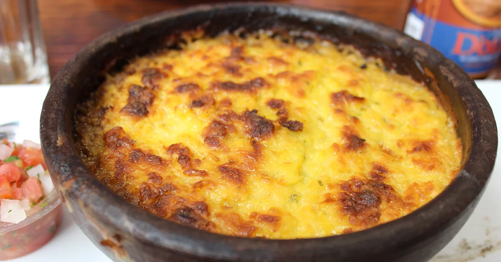

El pastel de choclo es un plato sudamericano preparado con una pasta horneada de granos tiernos de choclo y, dependiendo del lugar donde se prepare, es dulce o salado, con relleno o sin relleno. Es tradicional de las gastronomías de Argentina, Bolivia, Chile, Colombia, Ecuador, Paraguay, Perú, Uruguay.
Ingredientes: